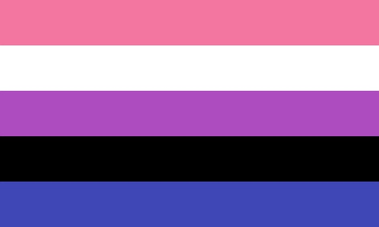
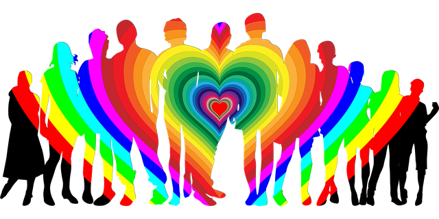

This page is intended to be an easily digestible source of information regarding non-traditional/non-colonial gender identities. The target audience is intended for those people questioning their own identities and for any allies that would like
to educate themselves more on LGBTQIA+ matters. This page was written and created by a queer person. Information will be pulled from personal experiences of the creator and other queer persons with additional information coming from reputable
sources. It should be noted that the creator comes from the United States and is themself a memeber of Western culture. They will do their best to present the information in an accurate and unbiased way, but as they are speaking about peoples
and cultures they are not a part of some information may be missed.
For this we’re gonna go with the axiom that sex and gender are not the same thing. And gender as its own concept is incredibly complex and comes with a lot of assumptions of how the world is divided and works. This big and complex concept comes
from our western colonial history and may not have an analogue or translation when we look at other cultures, which don’t have ties to the colonial world. Thus, what happens when one tries to step outside the binary genders of the colonial
world, inside the colonial society? And moreso, what happens if you look at other cultures without the expectation of finding gender there, do they have something else that’s a more important social grouping instead?
The way gender functions in western society today is largely performative. Not talking internal experiences or similar here, just how the rules work, and what happens when different people interact with them. What do I mean by performative?
Just that, when you go out in western society, the way people think and feel about your gender is based on how you look, move, act, talk. If all of these match up with what western society thinks is woman, you are categorized as a woman,
and will be catcalled on the street and allowed into the women’s bathroom. If how you look/act/move/etc. match up with what western society thinks is man, you’re expected to go into the men’s bathroom, you’ll be seen as a potential
threat at times, people will take what you say more seriously at other times.
When people stop neatly falling into these categories, you, the person who fell between, end up with a lot of problems. It doesn’t matter if you’re cis, trans, binary, non-binary. If you don’t match up with expectations, you’ll run into someone
thinking you’re in the wrong bathroom. Or harassing you for being gay, or similar, (because people who are
otherwise percieved as men, but have some feminine trait is often considered gay). This is most easily explained with binary trans people, and the phrase I can always tell when someone is trans. Because that phrase is, really
easily, proven false. Trans people come in all shapes and sizes. You may be able to tell that a
non-passing trans person is trans, (non-passing here meaning someone who has features that look trans, that other people pick up on). Thing is, cis people can fail to pass as well, the non-passing features, while
more common among trans people, aren’t exclusive to trans people. And even then, not all trans people have them. And with those people, you can’t notice their
transness from outside. So looking at how gender operates in western society, it’s pretty obvious that the real world mechanics of gender are just about how you look, what you do, what you say and how you say it. And that is very far
from this
fundamental property many people conceptualize it as.
For more information about the impact of gender norms visit the WHO gender page
For more information from the perspective of a trans woman check out this blog page

Image by Kat Love from Pixabay
Non-binary Identities in a Binary Envinronment
So with the mechanics of gender laid out, you may have noticed something. There’s only 2 groupings you can fall into without running into issues with where you belong, what places you’re allowed into etc.
This lack of acceptable box becomes even more explicit and apparent when you look at registration forms. Many of them treat gender as crucial information, even when it’s not really relevant for the service. Why does your bank need to know
your gender? What’s worse, is that the registration forms often assume a gender binary. There’s only man/woman, mr./ms./mrs., etc.
Even outside registration forms with explicit gender markers, gender is baked into our language. Aunt/uncle, mother/father, mom/dad, waiter/waitress, actor/actress. A lot of these lack a natural and non-weird sounding alternative for people who
don’t fit into them.
Not only does the lack of language that supports your own identity make expressing yourself difficult, the way it’s ingrained in the minds of people also makes it dangerous. If someone cannot immediately place you into one of the two categories
by the way you look/act alone, they’ll probably ask a question to disambiguate in their head. If you refuse to give a binary answer, it’s not uncommon to be met with hostility, distrust, and just general bad responses.
The acceptance and language is growing, slowly, but so is the reactionary opposition. People think they’re under attack because people not like them exist in public, out of hiding. They’re not under attack though, truck-driving macho-men can still
be truck-driving macho-men even though someone else is going by they/them pronouns and dresses androgynously.
For more information about non-binary gender in general visit the Wikipedia page

Image by Gordon Johnson from Pixabay
Gender (or lack thereof) in Other Cultures
Since the mechanics of gender in western society is based on the social expectations and norms and performative expression of the people engaging with it, and the people perceiving it, it begs the question, is this universal? We’re led to believe
that gender is fundamental and universal. We often hear about gender in other countries and cultures. But, given how the mechanics of western gender is to this weird intricate system, rather than an uncomplicated, easily observed, property
of someone, can it even be fair to say that gender is a property of cultures that don’t share this weird system?
People will always have prejudices and cultural stereotypes about physical aspects of people. Within the western world, tall people are often seen as intimidating, blondes as stupid, etc. These things will probably exist in some
form or another in all cultures and societies on earth. Thing is, trying to claim gender is just stereotypes
associated with certain physical characteristics of your body is not how gender actually works in western world, so if you go into another culture, and expect to find gender using that definition, you may come out with something that’s
an inaccurate, non-nuanced translation as best, or a complete misunderstanding at worst.
If you look at articles and reports about non-western cultures and how their genders work, you sometimes see things like third genders and two-spirit. But we never really get a proper examination or explanation for how these
things are gender in the first place. It feels like we just walked into a different culture, expecting to see gender, saw something we could kinda see as gender if we squint, and just assume that’s what they think gender is.
There are also, of course, non-western cultures that have as much of a complicated system, loosely tied to sexual characteristics, that differs from our western norms. Those could be easily mapped onto our western mindset of gender, without playing
as much mental gymnastics, but more, swapping out the properties and expectations while remaining the core
binary division, loosely based on sexual characteristics, complicated mechanics dependent on outside
perception.
I think we should stop assuming gender is universal, that all cultures have it, and to look for it wherever we point our gaze. Who knows what neat things we can find if we stop assuming everyone is like us?
For more information about non-western gender identities visit this National
Geographic article